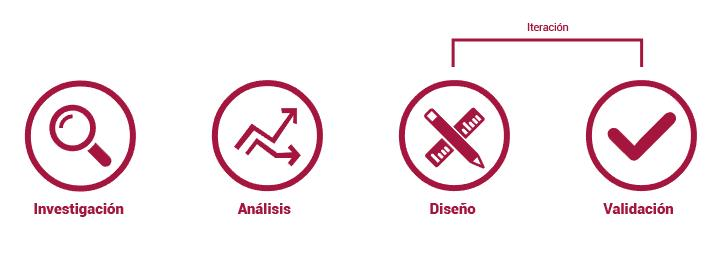

Hoy en día los hábitos de vida saludable son cada vez más populares, tanto así que para muchos ya es un estilo de vida, lo cual a puesto en la palestra varios deportes que no eran muy conocidos hace un par de años atrás, entre ellos el Crossfit.
“CrossFit es un programa de acondicionamiento físico general, amplio e inclusivo, que tiene como objetivo el desarrollo de todas las capacidades físicas. La funcionalidad, la variedad y la intensidad son sus pilares.”
No hay cifras exactas de cuantas personas practican Crossfit en Chile hoy en día, pero solo en Santiago hay más de 100 box en donde practicarlo.
Proceso de diseño
Mi proceso de diseño se basó en 4 etapas fundamentales para lograr llegar a un resultado óptimo en el tiempo solicitado.
Alerts
Progress
Button sizes
There are 4 button sizes: mini, small, normal and large
mini size small size normal size Large sizeButton edge
There are 3 button edge variations: normal, rounded and flat. Simply adding btn-rounded or btn-flat class and you'll get different button edge